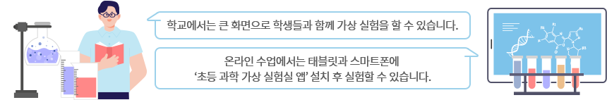

가상 실험실 도구 조작으로 과학 원리를 쉽게 습득,
안전하고 다양한 실험을 할 수 있는 모의 실험실입니다.
학년 선택으로 생생한 체험을 시작하세요!
가상 실험실 도구 조작으로 과학 원리를 쉽게 습득,
안전하고 다양한 실험을 할 수 있는 모의 실험실입니다.
학년 선택으로 생생한 체험을 시작하세요!
수업이 더 재미있어지는 과학 가상 실험실
초등 교육 과정의 과학 개념을 가상의 환경에서 함께 호기심을 해결하고, 실험 설계 능력을 키울 수 있습니다.
온라인/오프라인 걱정 없는 수업 지원
 학교에서는 큰 화면으로 학생들과 함께 가상 실험을 할 수 있습니다. 온라인 수업에서는 태블릿과 스마트폰에 ‘초등 과학 가상 실험실 앱’ 설치 후 실험할 수 있습니다.* PC에서 콘텐츠를 정상적으로 확인하기 위해 아래의 권장사양을 확인해 주세요.
| PC 권장 사양 | PC 최소 사양 | |
|---|---|---|
| 운영체제 | Window8 이상 | Window7 SP1 이상 |
| 브라우저 | 크롬, MS edge, 파이어폭스, 사파리 * IE(Internet Explorer)에서는 작동하지 않습니다. |
크롬, MS edge, 파이어폭스, 사파리 |
| 메모리 | 2GB 이상 | 2GB 이상 |
| 해상도 | 가로 1280 | 가로 1280 |
* ‘초등 과학 가상 실헙실 앱’은 Google Play · App Store 에서 다운받으실 수 있습니다.
인천삼산초등학교 박찬 선생님
인천미송초등학교 김병석 선생님
전남청계초등학교 한도윤 선생님